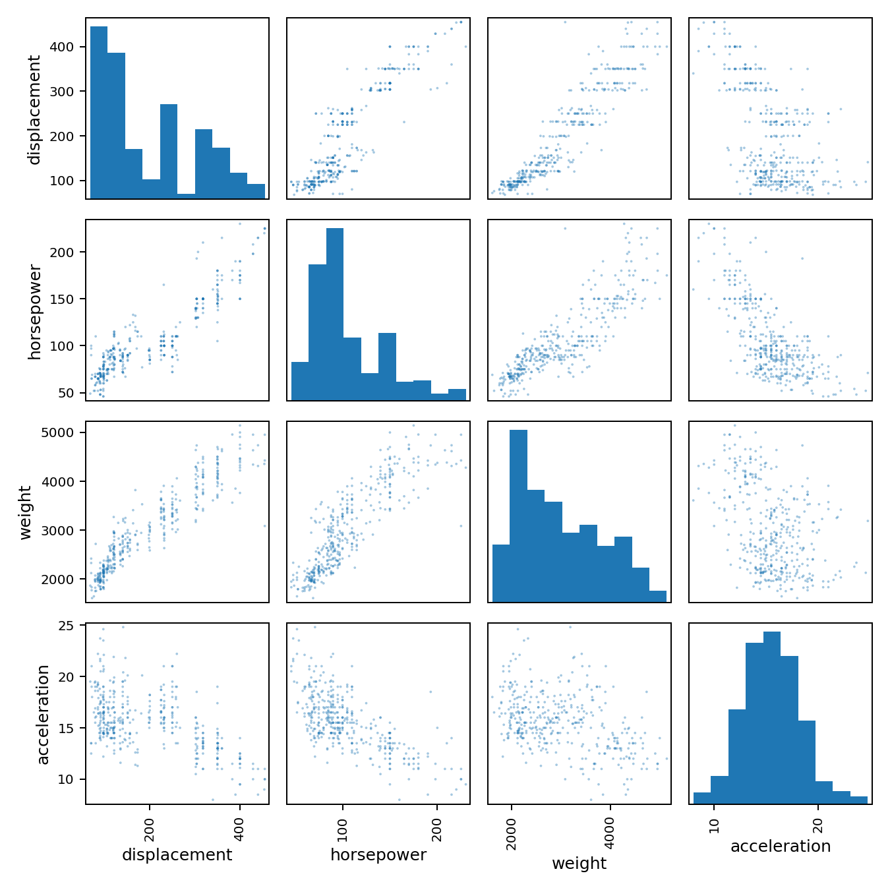

<!doctype html><html lang="zh-CN"><meta charset="utf-8"><meta name="viewport" content="width=device-width,initial-scale=1"><title>2.4-35</title><link rel="stylesheet" href="../../assets/style.css"><header><div><a href="../../textbook-exercises.html">教材章末习题目录</a><a href="../../index.html">全书代码目录</a></div></header><main><h1>代码 2.4-35 · 第9(e)：探索几个预测变量的关系</h1><p>按Notebook顺序运行。后续代码依赖前面定义的变量。真实数据来自教材官网。</p><button id="copy">复制整块代码</button><textarea id="code" readonly rows="10">columns = [&quot;displacement&quot;, &quot;horsepower&quot;, &quot;weight&quot;, &quot;acceleration&quot;]
axes = pd.plotting.scatter_matrix(auto_full[columns], figsize=(7.5, 7.5),
                                  alpha=0.4, s=9, diagonal=&quot;hist&quot;)
fig = axes[0, 0].figure
fig.tight_layout()
for suffix in [&quot;pdf&quot;, &quot;png&quot;]:
    fig.savefig(image_dir / f&quot;241-auto-matrix.{suffix}&quot;, dpi=180)
display(fig)
plt.close(fig)
</textarea><p id="status" role="status"></p><p><a href="../../notebooks/ch02/2.4-textbook-exercises.ipynb" download>下载已执行Notebook</a> · <a href="../../textbook-exercises.html">返回项目目录</a></p></main><script src="../../assets/copy.js" defer></script></html>